지쿱AI대학교 · 지쿱파트너스 교육용 프롬프트
사진만 올리면 되는, 제품 광고 프롬프트
사진을 누르면 예시와 프롬프트가 나와요. 상황 200가지마다 이미지 프롬프트와 10초 영상 프롬프트가 있어요. 사진 오른쪽 아래의 공유 단추를 누르면 그 번호 하나만 보이는 링크가 공유돼요.
1권 · 100개 · 제품 사진 한 장캐릭터·동물 + 제품
- 동물 · 영상1
-
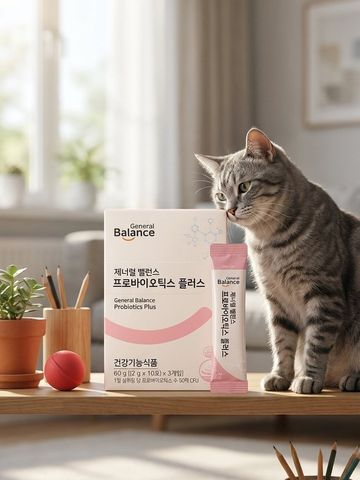
동물 · 영상2 - 동물 · 영상3
- 동물 · 영상4
-
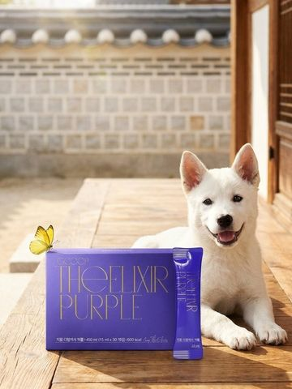
동물 · 영상5 -
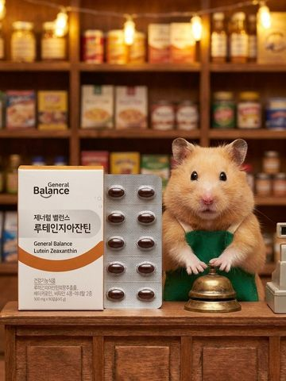
동물 · 영상6 -
 동물 · 영상7
동물 · 영상7
-
 동물 · 영상8
동물 · 영상8
-
 캐릭터 · 영상9
캐릭터 · 영상9
- 캐릭터 · 영상10
- 캐릭터 · 영상11
-
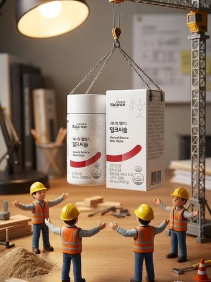
캐릭터 · 영상12 - 캐릭터 · 영상13
- 캐릭터 · 영상14
- 캐릭터 · 영상15
- 캐릭터 · 영상16
-
 애니메이션 · 영상17
애니메이션 · 영상17
-
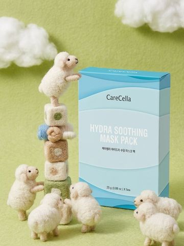
애니메이션 · 영상18 - 애니메이션 · 영상19
-
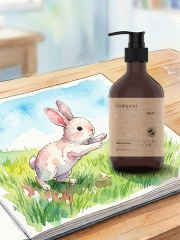
애니메이션 · 영상20 -
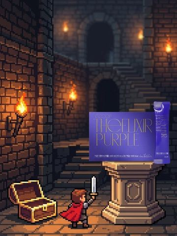
애니메이션 · 영상21 -
 애니메이션 · 영상22
애니메이션 · 영상22
-
 애니메이션 · 영상23
애니메이션 · 영상23
-
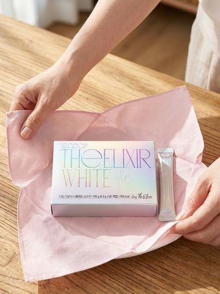
제품 중심24 - 제품 중심25
- 제품 중심26
-
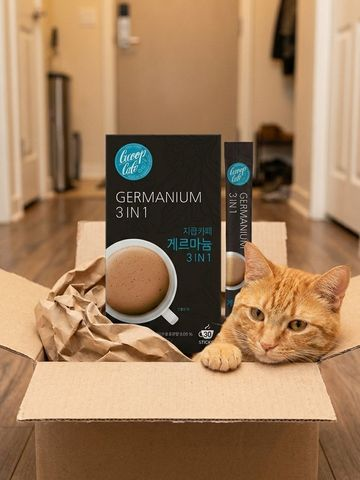
제품 중심27 -
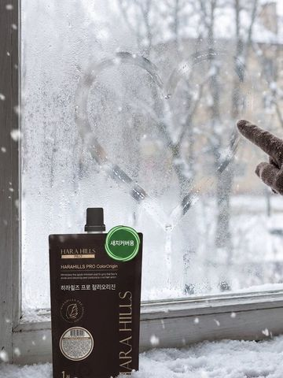
제품 중심28 -
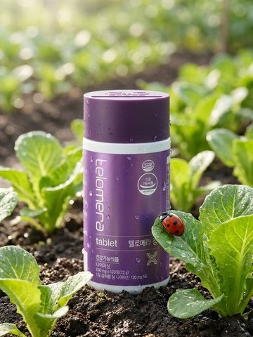
제품 중심29 - 제품 중심30
- 동물31
- 동물32
- 동물33
-
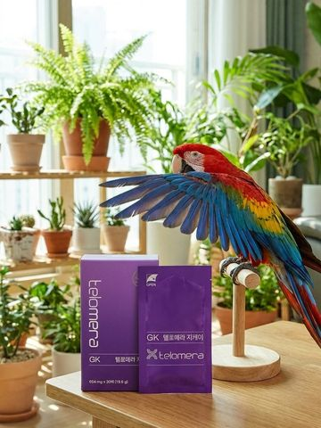
동물34 - 동물35
- 동물36
- 동물37
-
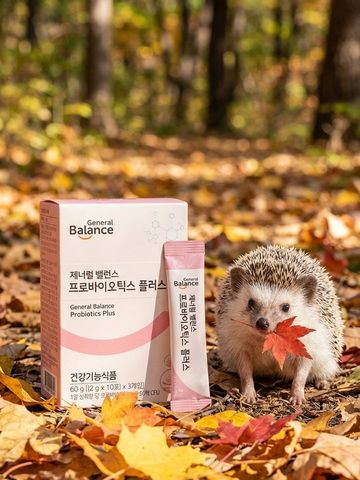
동물38 - 동물39
- 동물40
- 동물41
- 동물42
-
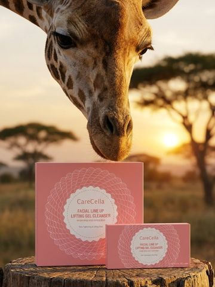
동물43 - 동물44
- 동물45
- 동물46
-
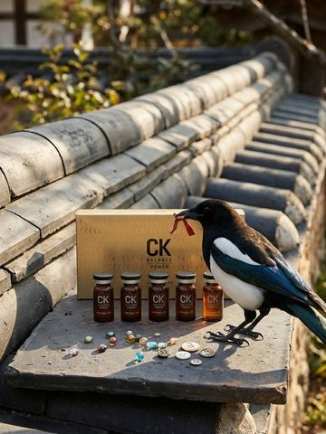
동물47 - 캐릭터48
- 캐릭터49
-
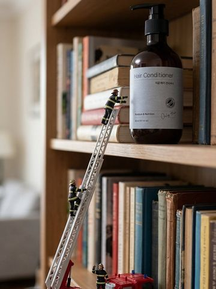
캐릭터50 - 캐릭터51
- 캐릭터52
- 캐릭터53
-
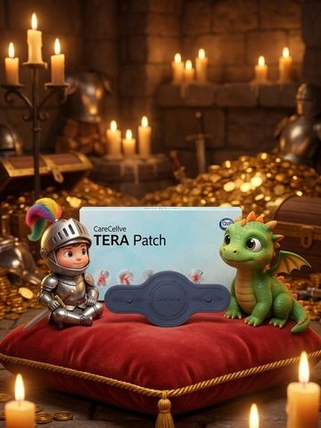
캐릭터54 - 캐릭터55
-
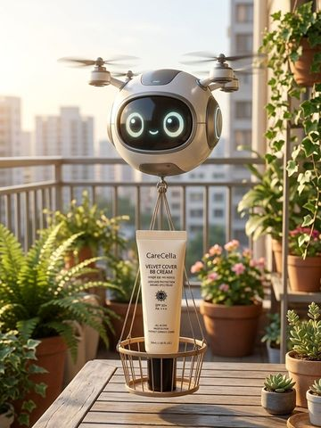
캐릭터56 -
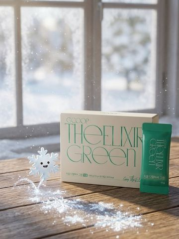
캐릭터57 -
 캐릭터 · 영상58
캐릭터 · 영상58
- 캐릭터59
- 캐릭터60
- 캐릭터61
- 캐릭터62
-
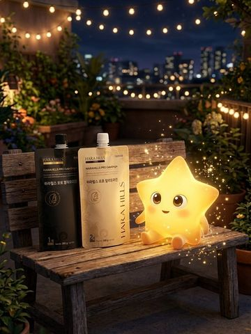
캐릭터63 -
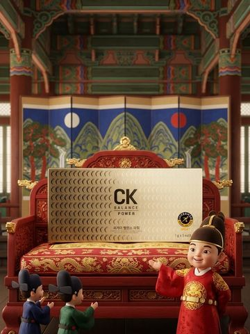
캐릭터64 -
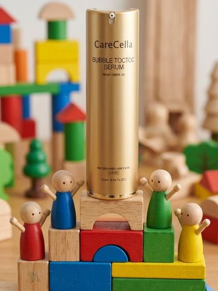
애니메이션65 - 애니메이션66
- 애니메이션67
-
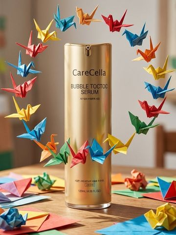
애니메이션68 - 애니메이션69
- 애니메이션70
- 애니메이션71
- 애니메이션72
-
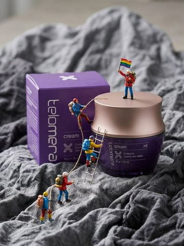
미니어처73 - 미니어처74
-
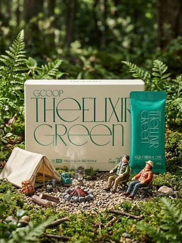
미니어처75 -
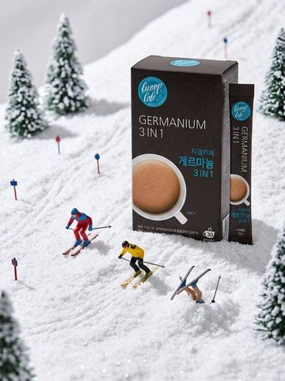
미니어처76 -
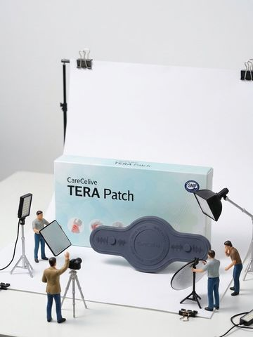
미니어처77 - 미니어처78
-
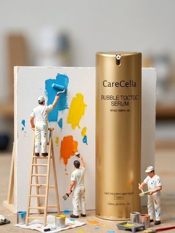
미니어처79 - 미니어처80
- 미니어처81
-
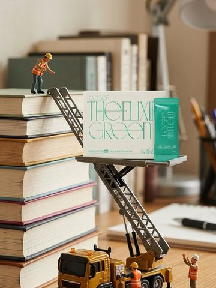
미니어처82 - 미니어처83
- 미니어처84
- 미니어처85
- 미니어처86
-
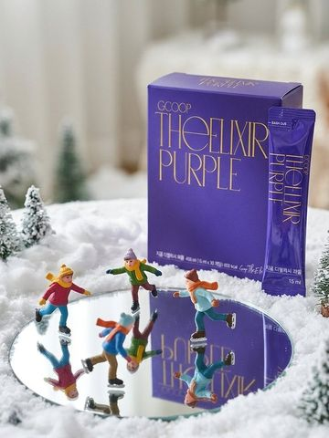
미니어처87 - 미니어처88
- 제품 중심89
-
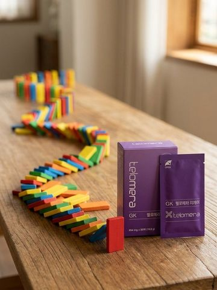
제품 중심90 - 제품 중심91
- 제품 중심92
-
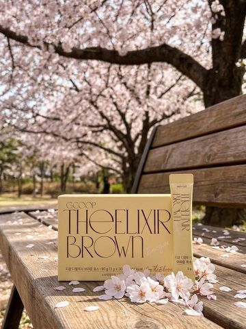
제품 중심93 -
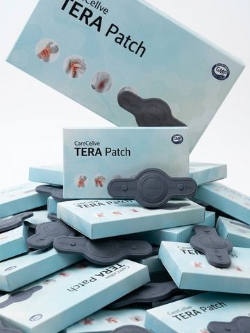
제품 중심94 -
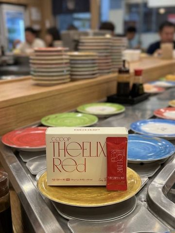
제품 중심95 - 제품 중심96
-
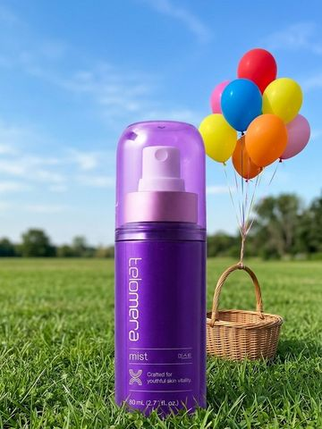
제품 중심97 - 제품 중심98
- 제품 중심99
-
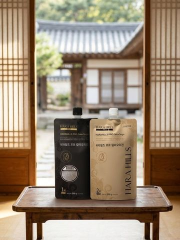
제품 중심100
2권 · 100개 · 인물 사진 한 장과 제품 사진 한 장사람 + 제품
- 코믹 · 영상1
- 코믹 · 영상2
- 코믹 · 영상3
-
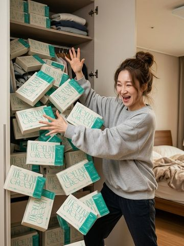
코믹 · 영상4 - 코믹 · 영상5
-
 코믹 · 영상6
코믹 · 영상6
-
 코믹 · 영상7
코믹 · 영상7
- 코믹8
- 코믹9
- 코믹10
- 코믹11
- 코믹12
- 코믹13
- 코믹14
- 코믹15
- 코믹16
- 코믹17
- 코믹18
- 코믹19
- 코믹20
- 코믹21
- 코믹22
- 코믹23
-
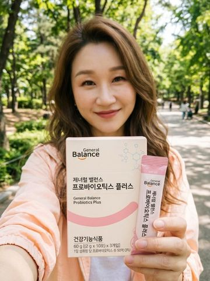
코믹24 -
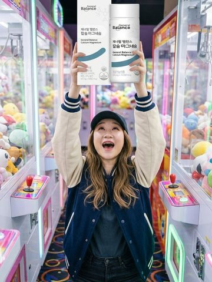
코믹25 - 광고26
- 광고27
- 광고28
- 광고29
- 광고30
- 광고31
- 광고32
- 광고33
- 광고34
- 광고35
- 광고36
- 광고37
- 광고38
- 광고39
- 광고40
- 광고41
- 광고42
-
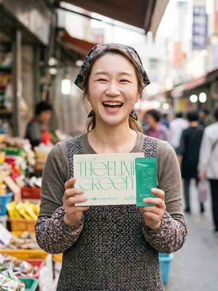
광고43 - 광고44
-
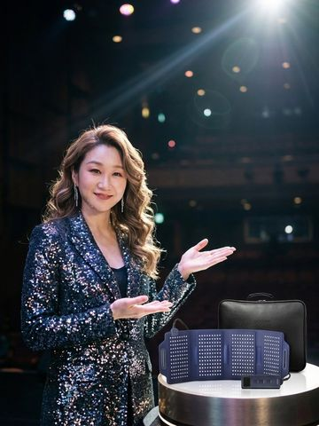
광고45 - 자연46
- 자연47
- 자연48
- 자연49
- 자연50
- 자연51
- 자연52
- 자연53
-
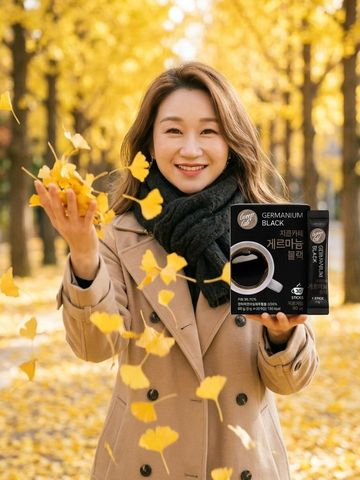
자연54 - 자연55
- 자연56
-
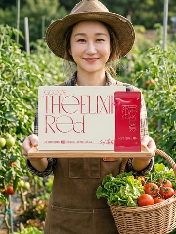
자연57 - 자연58
- 자연59
-
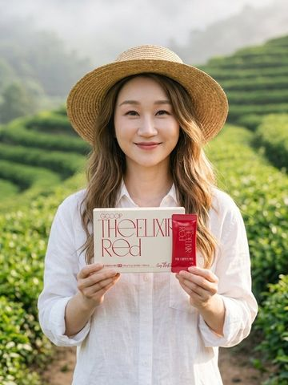
자연60 - 자연61
- 자연62
- 자연63
-
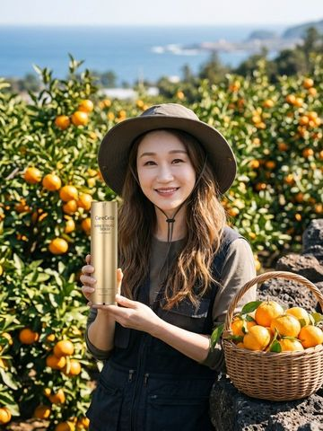
자연64 -
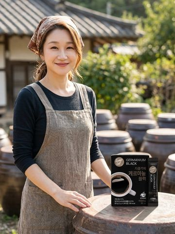
자연65 - 판타지66
- 판타지67
- 판타지68
- 판타지69
- 판타지70
-
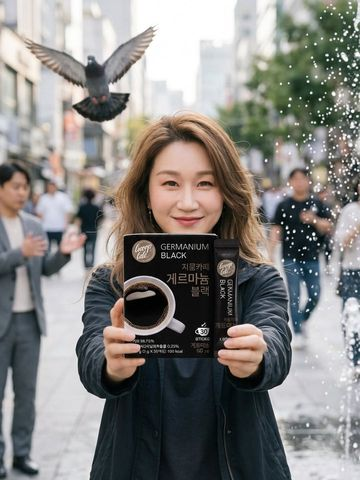
판타지71 - 판타지72
-
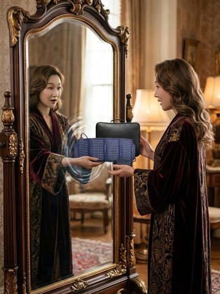
판타지73 - 판타지74
- 판타지75
- 판타지76
- 판타지77
- 판타지78
- 판타지79
- 판타지80
- 판타지81
- 판타지82
- 판타지83
- 판타지84
- 판타지85
-
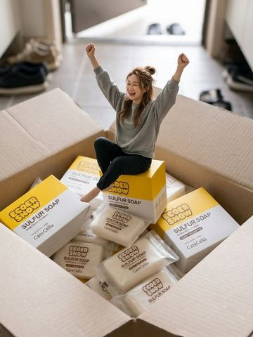
미니어처86 - 미니어처87
-
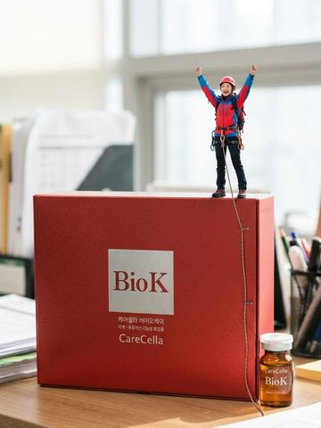
미니어처88 - 미니어처89
- 미니어처90
- 미니어처91
- 미니어처92
- 미니어처93
- 미니어처94
- 미니어처95
- 미니어처96
- 미니어처97
- 미니어처98
- 미니어처99
- 미니어처100
지쿱AI대학교 · 지쿱파트너스 교육용 프롬프트
출처 · AI로사쌤 · 무단 복제와 재배포를 금합니다